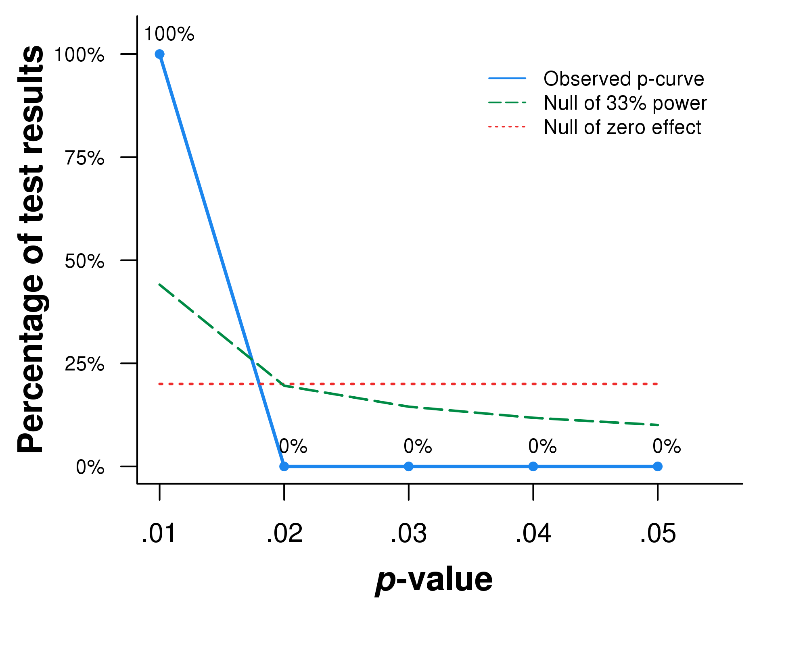
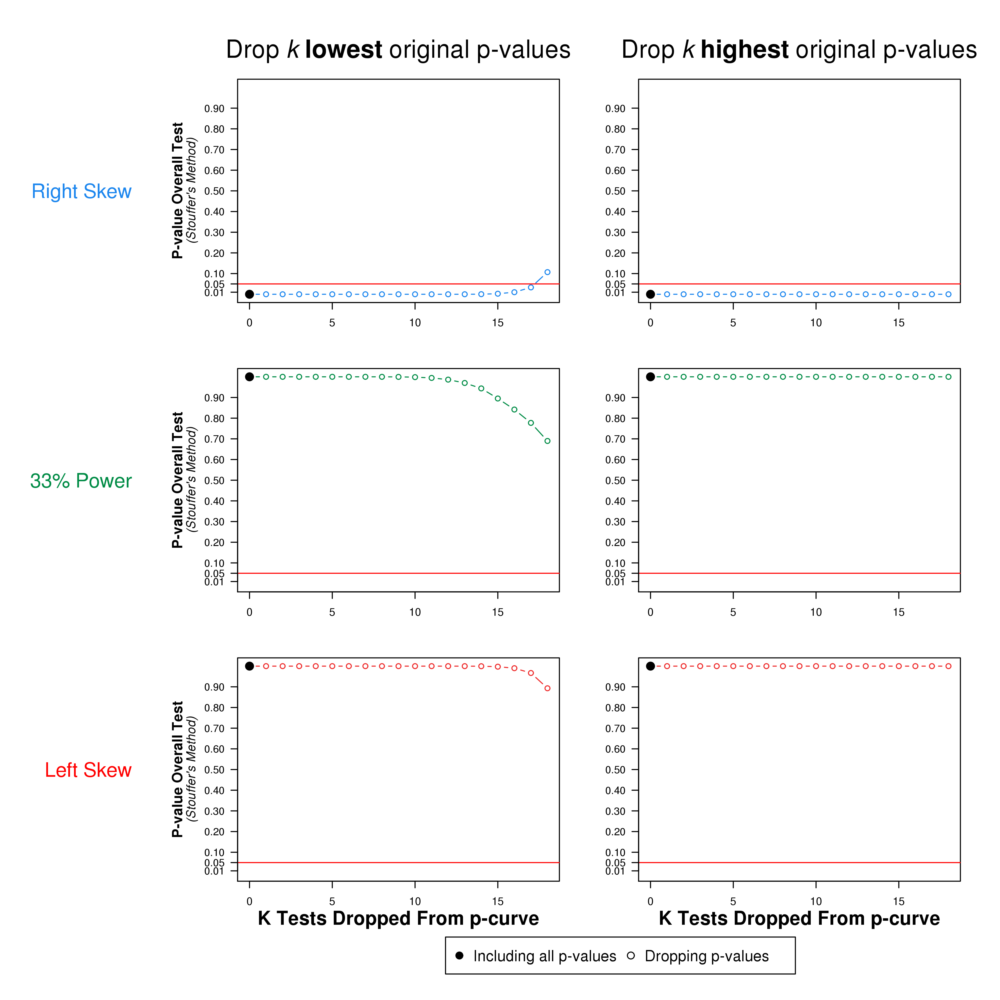
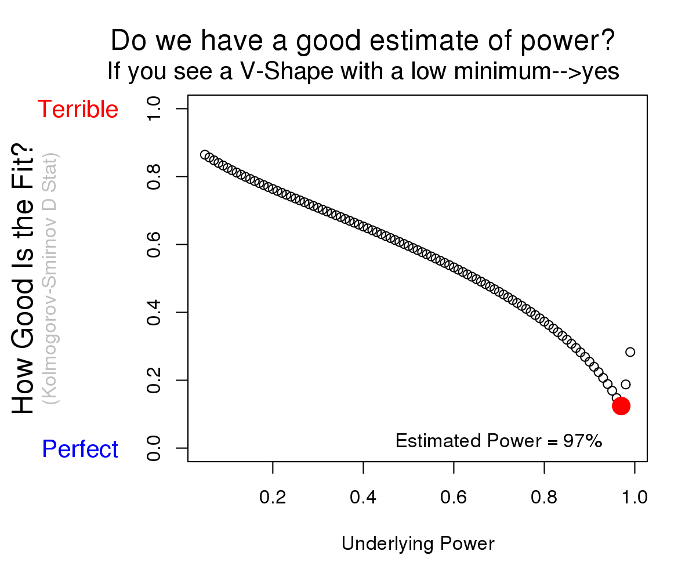

Statistical Inference
Results
Binomial Test
(Share of significant results p<.025)
1) Studies contain evidential value.
(Right skew)
p <.0001
Z = -13.43, p<.0001
2) Studies’ evidential value, if any, is inadequate.
(Flatter than 33% power)p >.9999
Z = 9.56, p>.9999
3) Studies exhibit evidence of intense p-hacking.
(Left skew)p >.9999
Z = 13.43, p>.9999
Estimate of Statistical Power
Average power of tests included in p-curve
(correcting for publication bias)
97%
The observed p-curve includes 19
significant results (p<.05), of which 100% are p<.025.
There were 2
additional results entered but excluded from p-curve becuase they were p>.05.
Dropping Highest/Lowest p-values
(Cumulative meta-analysis)
In order to assess the extent to which p-curve's overall results hinge on a few studies, the figure below reports them
excluding a progressively larger number of the most extreme p-values originally included in p-curve.
The first column of charts, reports results that first exclude the smallest p-value in p-curve, then the second smallest, and so on.
For example, if p-curve contained the following four p-values: p=.001, p=.004, p=.01 and p=.045, the 1st marker would report results with all four p-values,
the next marker when one excludes p=.001, then excluding both p=.001 and p=.004, and so on.
In the second column one proceeds in opposite order. First excluding p=.045, then p=.045 and p=.01, and so on.
For completeness the graph plots what happens until there is only one p-value left, but in most situations one is only interested on what happens as the
single or handful of most extreme p-values are excluded.
We should place more confidence in sets of studies whose overall evidential value survives the
exclusion of the most extreme few results.

Brief Explanations of Main Results:
1) Binomial tests compare the observed proportion of significant results that are p<.025 (in this case: 100%) to the expected proportions
when there is no effect (50%), and when studies have 1/3 power (71%). This latter number (71%) varies (by a few %s)
as a function of the degrees of freedom of the tests entered to p-curve.
2) Continuous tests are obtained by computing pp-values for each test (probability of at least as extreme a p-value conditional on p<.05), and converting them to Z scores(N(0,1))
The sum of these (19
in this case) Z scores, divided by the square-root of the number of tests included (again: 19
in this case)
is the reported Z score in that column (and corresponding p-value). This approach is known as Stouffer's Method (read text in gray below for more information).
Note that the binomial and continuous tests are by definition one-sided (e.g., more right skewed than flat). We use negative Z values to indicate
deviation in the direction of the alternative of interest; for example a negative Z value for the Right-Skew test is evidence against the flat null, in
favor of Right-Skew.
3) Statistical power is obtained by comparing the expected p-curve for each possible value of power between 5% and 99% to the observed p-curve, and selecting
the level of power that leads to the expected p-curve that most closely resembles the observed p-curve (we quantify the similarity with Kolmogorv-Smirnov's D statistic).
Note: Why do you now see Z-scores instead of chi-square values in the Statistical Inference table above?
In our p-curve paper, and previous versions of this app, we combined the pp-values using Fisher's
rather that Stouffer's method (Fisher's method results in an overall chi-square rather than Z score result).
We now prefer Stouffer's method because it is more sensitive to consistent mild departures from the null, and less sensitive to occasional extreme departures (e.g., a single p=.04999 or p=.0000001).
See pages 66-68 in Abelson's "Statistics as a Principled Argument"
book. We have re-run all analyses in our published paper using Stouffer's method and the results, importantly those of overall power (Figure 6 in the paper), are very similar:
(.pdf).
Note: The R Code necessary to carry out all calculations is available here.
| Test entered by user |
recalculated p-value | pp-values | Z Scores | ||||
|---|---|---|---|---|---|---|---|
| right-skew | left skew | power of 33% | right-skew | left skew | power of 33% | ||
| t(804)=8.58446294654905 | <.00001 | <.00001 | >.9999 | >.9999 | -7.76 | 7.75 | 6.73 |
| t(1228)=4.86498257839542 | <.00001 | .00003 | >.9999 | .99864 | -4.05 | 4.05 | 3.00 |
| t(769)=4.33039022965902 | .00002 | .00034 | .99966 | .99187 | -3.40 | 3.40 | 2.40 |
| t(229)=2.81190920641183 | .00535 | .10704 | .89296 | .68976 | -1.24 | 1.24 | 0.50 |
| t(217)=3.22379739961945 | .00146 | .02920 | .97080 | .85593 | -1.89 | 1.89 | 1.06 |
| t(434)=2.91124964470549 | .00379 | .07571 | .92429 | .74410 | -1.43 | 1.43 | 0.66 |
| t(179)=1.48840305632205 | p>.05 | - | - | - | - | - | - |
| t(2206)=4.23763491103271 | .00002 | .00047 | .99953 | .98965 | -3.31 | 3.31 | 2.31 |
| t(368)=10.2643973062933 | <.00001 | <.00001 | >.9999 | >.9999 | -7.76 | 7.75 | 7.16 |
| t(778)=3.33288382464159 | .00090 | .01800 | .98200 | .89085 | -2.10 | 2.10 | 1.23 |
| t(112)=3.03091870625506 | .00303 | .06058 | .93942 | .78041 | -1.55 | 1.55 | 0.77 |
| t(186)=4.7394292036372 | <.00001 | .00008 | >.9999 | .99714 | -3.76 | 3.76 | 2.76 |
| t(310)=3.19896373465776 | .00152 | .03044 | .96956 | .85124 | -1.87 | 1.87 | 1.04 |
| t(1048)=2.85483394308673 | .00439 | .08782 | .91218 | .72022 | -1.35 | 1.35 | 0.58 |
| t(349)=3.45271375056154 | .00062 | .01246 | .98754 | .91398 | -2.24 | 2.24 | 1.37 |
| t(444)=3.65652841701059 | .00029 | .00573 | .99427 | .94722 | -2.53 | 2.53 | 1.62 |
| t(64)=0.158766249755659 | p>.05 | - | - | - | - | - | - |
| t(148)=3.75272576292879 | .00025 | .00501 | .99499 | .95348 | -2.57 | 2.57 | 1.68 |
| t(570)=3.77626787342958 | .00018 | .00352 | .99648 | .96127 | -2.70 | 2.70 | 1.77 |
| t(1439)=4.57254961531426 | .00001 | .00010 | .99990 | .99634 | -3.71 | 3.71 | 2.68 |
| t(312)=4.32038129866504 | .00002 | .00042 | .99958 | .99085 | -3.34 | 3.34 | 2.36 |
| SUM of Z-Scores in column, dividing by sqrt(N of tests) - Stouffer's Method-----> | -13.43 | 13.43 | 9.56 | ||||
Explaining these calculations with an example:
Take the first significant result entered: t(804)=8.58446294654905.
A two-sided test obtaining that test value has a p-value of 0.
pp-values are the probability of at last as extreme a significant p-value. For right and left skew we compute these under the null
of no effect; becuase p-values would be distributed uniform between 0 and .05, we simply divide by .05 (multiply by 20) and get the pp-value for right skew,
that is 0*20=0. One minus that gives us the pp-value for left skew 1.
For the pp-value under the null that the test is powered to 33% things are a bit more complicated. This explanation will not be quite enough, but: we find the non-centrality parameter for the
corresponding distribution and degrees of freedom that gives 33% power. We then evaluate in that non-central distribution the observed test statistic, t(804)=8.58446294654905, and now divide by 33% rather than 5%
because now 1/3 of tests are expected to be p<.05 rather than only 5% of them.
More importantly, the interpretation of the pp-value for 33% power is as follows. If the underlying effect size were big enough
to give the sample of the study obtaining t(804)=8.58446294654905 33% power, then with probability 1 we would get a p-value of 0 or higher.
The last three columns report the Z-Scores that give rise to the pp-values from the previous columns. So for the right-skew pp-value we had p=0, evaluating the
standard normal distribution in that percentile gives us the reported Z=-7.76. Note that because left-skew pp-values are one minus the right skew ones, and the normal
distribution is symmetrical, the Z-score for left skew is always the same value with opposite sign of that of right skew.
Note: when a p-value or pp-value is smaller than 2.22e-16 the app uses that value instead.
The calculations are hence only approximate for extremely significant results (e.g., t(98)=7.12).
Diagnostic plot for power estimation
This figure plots how close the expected p-curve gets to the observed p-curve for each level of power between 5% and 99%.
The y-axis is how far from perfect the fit is for a given level of power.
The table with results at the top of this page reports 97% as the estimate of power. The figure below shows that is
the level of power that gets us closest to the observed p-curve.
If the red dot in the figure is noticeably lower than the other dots, it means that the estimate of power is indeed better fitting than the alternatives.
The flatter the curve below looks, the less confident you should be in the power estimate, becuase it means that the data are nearly as consistent with
other levels of power.

Relative frequency of p-values depicted in p-curve chart above
(You can copy-paste them elsewhere (e.g., Excel) to make your own graph)
| p-value | observed | 33% power | uniform |
|---|---|---|---|
| 0.01 | 100.0% | 44.1% | 20% |
| 0.02 | 0.0% | 19.6% | 20% |
| 0.03 | 0.0% | 14.5% | 20% |
| 0.04 | 0.0% | 11.8% | 20% |
| 0.05 | 0.0% | 10.1% | 20% |